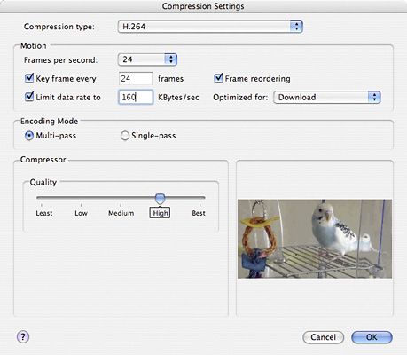

|
Q: Is there an easier way to configure Compression Session options or does each option have to be set by hand?A: Yes there is an easier way by using the UI provided by Standard Compression. The Standard compression dialog component provides applications with a high level consistent user interface for specifying the parameters that control compression operations, and allows for easy configuration of a Compression Session options object. Figure 1 shows what this dialog looks like when configuring the H.264 codec. Figure 1: Standard Compression dialog.  Listing 1 demonstrates one way to use the Standard Compression component to retrieve Compression Session options. Once the Standard Compression dialog has been dismissed, call The newly created Compression Session will retain this options object. Call Listing 1: Using Standard Compression to configure Compression Session options.
ICMCompressionSessionOptionsRef GrabCSessionOptionsFromStdCompression()
{
ComponentInstance stdCompression = 0;
long scPreferences;
ICMCompressionSessionOptionsRef sessionOptionsRef = NULL;
ComponentResult err;
// open the standard compression component
err = OpenADefaultComponent(StandardCompressionType, StandardCompressionSubType, &stdCompression);
if (err || 0 == stdCompression) goto bail;
// Indicates the client is ready to use the ICM compression session API to perform compression operations
// StdCompression will disable frame reordering and multi pass encoding if this flag not set because the
// older sequence APIs do not support these capabilities
scPreferences = scAllowEncodingWithCompressionSession;
// set the preferences we want
err = SCSetInfo(stdCompression, scPreferenceFlagsType, &scPreferences);
if (err) goto bail;
// display the standard compression dialog box
err = SCRequestSequenceSettings(stdCompression);
if (err) goto bail;
// creates a compression session options object based on configured settings
err = SCCopyCompressionSessionOptions(stdCompression, &sessionOptionsRef);
bail:
if (0 != stdCompression) CloseComponent(stdCompression);
return sessionOptionsRef;
}
References:Image Compression Dialog Component Document Revision History
Posted: 2006-01-12 |
|